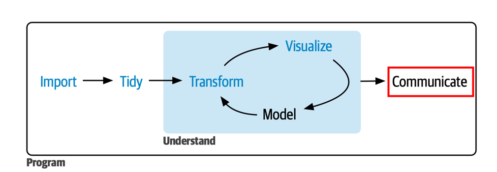
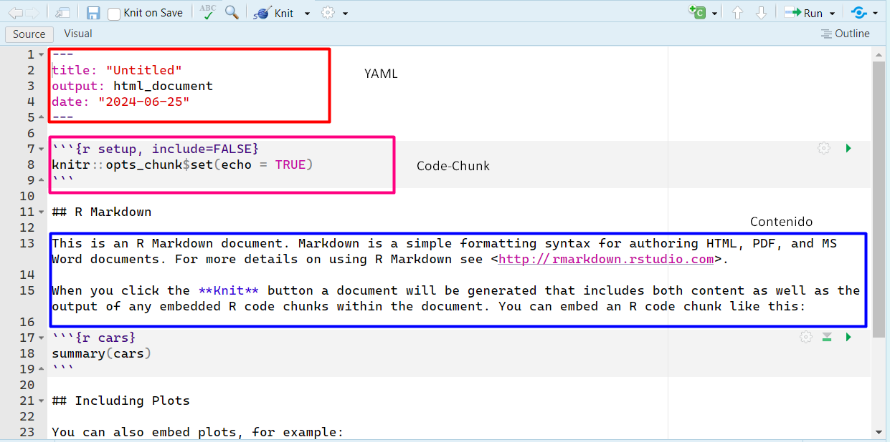
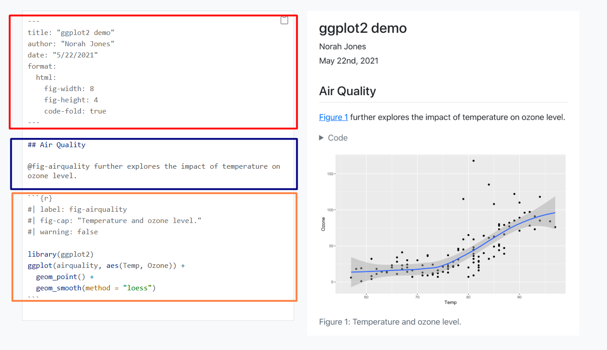

Clase 4: Comunicar con R y Aplicaciones de uso de IA Generativa
Análisis de Datos y Estadística Computacional
Universidad Adolfo Ibáñez | DIAPP-2026
20 de junio de 2026
¡Bienvenid@s a la Clase 4!
Cierre de la Unidad I
Esta es la última clase de la Unidad I: Herramientas de Ciencia de Datos con R. El objetivo es cerrar el ciclo de trabajo con datos aprendiendo a comunicar resultados de forma reproducible y a acelerar nuestro flujo de trabajo con herramientas de IA generativa.
Los contenidos específicos de la clase son:
- Principios básicos para contar historias con datos.
- Qué son R Markdown y Quarto, y por qué preferimos Quarto.
- Estructura de un documento Quarto: YAML, chunks y texto.
- Aplicaciones de IA generativa para programar en R.
Resumen Unidad I
| Clase | Contenido |
|---|---|
| Clase 1 | Importar datos: read_csv, read_excel, read_dta, left_join
|
| Clase 2 | Transformar datos: dplyr, tidyr, lubridate, forcats
|
| Clase 3 | Visualizar datos: ggplot2, gramática de gráficos, extensiones |
| Clase 4 | Comunicar: documentos reproducibles + IA generativa |

Contar historias con datos
¿Por qué contar una historia?
- La mayor parte de la visualización y el análisis de datos se realiza con el fin de comunicar algo a alguien (Schimel 2012).
- Una historia es un conjunto de observaciones o hechos presentados en un orden que genera una reacción en la audiencia: curiosidad, sorpresa, convicción.
- La clave es construir un arco narrativo claro: ir de la tensión (el problema o la pregunta) hacia la resolución (el hallazgo o la recomendación).
El marco SUCCES
Una buena historia con datos cumple seis principios (Heath y Heath 2013):
| Principio | ¿Qué significa? |
|---|---|
| Simple | El mensaje principal es claro y compacto |
| Unexpected | Presenta algo novedoso que genera curiosidad |
| Concrete | Combina lo abstracto de las ideas con lo concreto de los datos |
| Credible | Se sustenta en datos y metodología robusta |
| Emotional | Motiva a la audiencia: no solo informa, sino que genera conexión |
| Stories | Tiene una estructura interna coherente |
Un plan para construir una historia con datos
A continuación, se propone un plan de acción para construir una historia con datos (Alexander 2023)
- Planifiquen el punto final: ¿qué quieren que la audiencia recuerde o haga?
- Exploren los datos buscando patrones y hallazgos relevantes.
- Diseñen las visualizaciones que mejor comunican esos hallazgos.
- Estructuren la narrativa: contexto → hallazgo → implicancia.
- Compartan usando un formato reproducible (Quarto, R Markdown).
Tip
Piensen en el gráfico como el punto focal de la historia: si alguien ve solo el gráfico sin leer el texto, ¿entiende el mensaje principal? (NUSSBAUMER KNAFLIC 2025)
Documentos reproducibles
¿Por qué usar Quarto o R Markdown?
El flujo tradicional implica:
- Analizar en R → copiar resultados → pegar en Word → formatear → exportar.
- Si los datos cambian → repetir todo desde el paso 1.
R Markdown y Quarto resuelven esto: integran código, resultados y texto en un solo archivo que se compila automáticamente.
¿Qué es R Markdown?
- Entorno para crear documentos reproducibles que combinan código R, resultados (tablas, gráficos) y texto narrativo en un solo archivo
.Rmd. - Permite compilar (knit) a múltiples formatos: HTML, PDF, Word, PowerPoint.
- Fue creado por Yihui Xie (2014) y es mantenido por Posit (ex RStudio).

¿Qué es Quarto?
-
Quarto (
.qmd) es el sucesor de R Markdown: un sistema de publicación científica de código abierto construido sobre Pandoc («Quarto», s. f.). - Ventajas sobre R Markdown:
- Multilingüe: funciona con R, Python y Julia.
- Todo en uno: no necesita paquetes adicionales (bookdown, blogdown, xaringan) — todo está integrado.
- Herramientas modernas: callouts, paneles con tabs, cross- references, layout avanzado, interactividad.
- Independiente de RStudio: funciona desde VS Code, terminal, Jupyter.
Características de cada uno
R Markdown (.Rmd) |
Quarto (.qmd) |
|
|---|---|---|
| Lenguaje | Solo R | R, Python, Julia |
| Ecosistema | Muchos paquetes separados | Todo integrado |
| Funcionalidades | Depende del paquete | Callouts, tabs, layouts nativos |
| Recomendación de uso | Proyectos existentes en .Rmd
|
Proyectos nuevos |
Tip
Para este curso y la Tarea 1 podremos usar Quarto (.qmd) o R Markdown (.Rmd). La sintaxis es casi idéntica a R Markdown, por lo que si ya saben .Rmd, la transición es inmediata.
Atención
Aunque Quarto y R Markdown cumplen funciones similares, la sintaxis del encabezado YAML no es exactamente la misma.
Por ejemplo, para generar un documento HTML:
Si copian código desde internet o utilizan IA generativa, verifiquen siempre si el ejemplo fue escrito para R Markdown o para Quarto, ya que algunos argumentos y opciones cambian entre ambos formatos.
Estructura de un documento Quarto
Un archivo .qmd tiene tres componentes:

1. YAML (Yet Another Markup Language)
- Va al inicio del documento, delimitado por
---. - Define metadatos y opciones de configuración: título, autor, fecha, formato de salida, tabla de contenidos, tema, etc.
2. Chunks de código
- Bloques delimitados por
```{r}y```que contienen código R ejecutable. - Atajo para insertar: Ctrl + Alt + I (Mac: Cmd + Option + I).
- Se configuran con opciones
#|al inicio del chunk:
Opciones más comunes de los chunks
| Opción | Efecto |
|---|---|
echo: true/false |
¿Muestra el código en el documento? |
eval: true/false |
¿Ejecuta el código? |
warning: false |
Oculta warnings |
message: false |
Oculta mensajes |
include: false |
Ejecuta pero no muestra ni código ni resultado |
fig-width / fig-height
|
Tamaño del gráfico |
code-fold: true |
Código colapsable (solo HTML) |
3. Texto en Markdown
- Todo lo que no es YAML ni chunk es texto narrativo escrito en Markdown:
| Sintaxis | Resultado |
|---|---|
# Título |
Encabezado nivel 1 |
## Subtítulo |
Encabezado nivel 2 |
**negrita** |
negrita |
*cursiva* |
cursiva |
`código` |
código |
[texto](url) |
Hipervínculo |
 |
Imagen |
Compilar (Render)
- Para generar el documento final: Ctrl + Shift + K (Mac: Cmd + Shift + K), o hacer clic en el botón Render.
- Quarto convierte el
.qmd→ ejecuta el código → genera el HTML/PDF/Word.
Demostración en vivo
Crear un documento Quarto y R Markdown
🖥️ Demo: Crear un documento Quarto
- File → New File → Quarto Document
- Elegir título, autor y formato (HTML)
- Explorar la estructura: YAML, chunks, texto
- Insertar un chunk con un gráfico (
Ctrl + Alt + I) - Compilar con Render y ver el resultado
. . .
(También veremos cómo crear un archivo R Markdown para comparar la diferencia)
Recursos útiles
- Quarto — Get Started — guía oficial de instalación y primeros pasos.
- R for Data Science, Cap. 28: Quarto — el libro de referencia del curso (Wickham & Grolemund).
- R Markdown: The Definitive Guide — referencia completa de R Markdown (Xie et al., 2018).
- Quarto Cheat Sheet — resumen de una página.
- Get started with Quarto — Mine Çetinkaya-Rundel — tutorial en video (recomendado).
IA Generativa para programar en R
¿Qué es la IA generativa?
Es un tipo de Inteligencia Artificial capaz de crear contenido nuevo (texto, código, imágenes, audio, video) a partir de instrucciones en lenguaje natural.
Su gran salto fue justamente ese: añadir una capa de lenguaje natural, de modo que ya no necesitamos ser expertos para “conversar” con la herramienta y pedirle lo que necesitamos.
En el contexto de ciencia de datos con R, herramientas como ChatGPT (OpenAI), Claude (Anthropic), Gemini (Google) o Copilot (GitHub) pueden generar, explicar y corregir código.
Nota
Esta clase no busca que deleguen el trabajo en la IA, sino que la usen como una extensión de sus capacidades para programar mejor y más rápido.
Ventajas y riesgos en programación
Ventajas ✅
- Acelera tareas repetitivas y código rutinario.
- Ayuda a aprender funciones y paquetes nuevos.
- Facilita depurar errores difíciles de leer.
- Permite traducir una idea en lenguaje natural a código.
Riesgos ⚠️
- Puede generar código incorrecto o ineficiente.
- Riesgo de no entender lo que se copia y pega.
- Riesgos éticos en la producción de información y su uso en la toma de decisiones.
- Privacidad: Incumplimientos legales de privacidad de los datos.
Tip
La regla de oro: nunca usen código que no puedan explicar. La IA propone, pero ustedes deciden, verifican y entienden.
Herramientas que pueden usar
| Herramienta | Fortalezas principales |
|---|---|
| Google Gemini | Integración con Google Colab, análisis de documentos extensos, programación y ciencia de datos. |
| ChatGPT | Programación, estadística, generación y corrección de código, explicación de conceptos y apoyo al aprendizaje. |
| Claude | Explicaciones detalladas, revisión de código largo, documentación y redacción técnica. |
Todas son gratuitas (con límites de uso) y requieren únicamente crear una cuenta.
Tip
Para este curso recomendamos Google Gemini porque permite ejecutar código R directamente en Google Colab sin mayores requisitos.
Ingeniería de prompts: la clave
Un prompt es la instrucción que le damos a la IA. La calidad de la respuesta depende directamente de la calidad del prompt.
Un buen prompt tiene 4 componentes (White et al., s. f.):
- Rol: quién es la IA en este contexto.
- Contexto: qué datos tenemos, qué paquetes usamos.
- Tarea: qué queremos que haga, de forma específica.
- Formato: cómo queremos la respuesta.
Estructura de un buen prompt
Prompt vago ❌
“Hazme un gráfico de barras en R”
→ La IA no sabe qué datos usar, qué variable graficar ni qué estilo aplicar.
Prompt estructurado ✅
“Eres un experto en R, tidyverse y visualización de datos con ggplot2. Estoy trabajando con el dataset gapminder en R. Quiero analizar únicamente los datos correspondientes al año 2007. Genera un gráfico de dispersión entre PIB per cápita (gdpPercap) y esperanza de vida (lifeExp). Requisitos: - Colorea los puntos según continente. - Agrega una línea de tendencia lineal. - Utiliza ggplot2. - Utiliza sintaxis moderna con pipes (|>). - Incluye comentarios breves en español. Entrega únicamente el código en R.”
Anatomía de un buen prompt
Un buen prompt para programar combina cuatro elementos:
Elementos para un buen prompt
ROL: Eres un experto en R, tidyverse y visualización de datos con ggplot2.
CONTEXTO: Estoy trabajando en R con el dataset gapminder. Ya filtré los datos para el año 2007 y la base contiene las variables gdpPercap, lifeExp y continent.
TAREA: Necesito crear un gráfico de dispersión entre PIB per cápita y esperanza de vida, con los puntos coloreados por continente y una línea de tendencia lineal.
FORMATO: Dame solo el código en R usando tidyverse y ggplot2. Incluye comentarios breves en español para explicar cada paso.
Tip
Mientras más específico sea el contexto, más útil será la respuesta. La IA no solo necesita saber qué quieres hacer, sino también con qué datos, paquetes y formato de salida.
Aplicaciones concretas
Aplicación 1: Entender código existente
Eres un experto en R y tidyverse. Estoy aprendiendo análisis de datos con R y estoy trabajando con el dataset gapminder. Explícame paso a paso qué hace el siguiente código y cuál es el resultado esperado. No modifiques el código. gapminder |> filter(year == 2007) |> group_by(continent) |> summarise( esperanza_vida = mean(lifeExp) ). Utiliza un lenguaje sencillo y explica cada función por separado antes de interpretar el resultado final.
Tip
Este uso es especialmente valioso para aprender: en vez de buscar cada función por separado, obtienen una explicación contextualizada del flujo completo.
Aplicación 2: Generar código
Eres un experto en R, tidyverse y visualización de datos con ggplot2. Estoy trabajando con el dataset gapminder en R. Quiero analizar únicamente los datos correspondientes al año 2007. Genera un gráfico de dispersión entre PIB per cápita (gdpPercap) y esperanza de vida (lifeExp). Requisitos: - Colorea los puntos según continente. - Agrega una línea de tendencia lineal. - Utiliza ggplot2. - Utiliza sintaxis moderna con pipes (|>). - Incluye comentarios breves en español. Entrega únicamente el código en R.
Aplicación 3: Mejorar un resultado
Una vez obtenido el gráfico, podemos iterar:
Mantén la lógica del gráfico anterior y realiza las siguientes mejoras: - Agrega un título descriptivo. - Agrega etiquetas para ambos ejes. - Utiliza otro tema distinto sugerido. - Mueve la leyenda a la parte inferior. - Aumenta ligeramente el tamaño de los puntos. Entrega únicamente el código actualizado en R.
Tip
La ventaja de este enfoque es que ustedes mantienen el control: parten de código que ya entienden y le piden mejoras incrementales, verificando cada resultado.
Un mal prompt
Hazme un gráfico con gapminder.
¿Por qué es problemático?
- No especifica qué variables usar.
- No indica qué análisis realizar.
- No define el formato de salida.
- Distintas IA producirán resultados distintos.
Mientras más específico sea el prompt, más útil será la respuesta.
Ejemplo en vivo con Gemini en Google Colab
🤖 Demo: IA generativa en acción
- Abrir Google Colab con R
- Usar Gemini integrado para:
- Explicar un bloque de código
- Generar un gráfico paso a paso
- Iterar pidiendo mejoras al gráfico
- Ejecutar el resultado (ya sea en colab o en Rstudio)
Buenas prácticas con IA
- Siempre verificar el código generado: ejecutarlo, revisar el resultado, entender qué hace cada línea.
- No copiar sin entender: si no pueden explicar qué hace el código, no lo usen. La Tarea 1 requiere justificación escrita.
- Iterar: si la primera respuesta no es perfecta, refinan el prompt. La conversación es un ida y vuelta.
- Citar: si usaron IA para generar código, indíquenlo. La transparencia es parte de la integridad académica.
- Aprender: usen la IA como tutor, no como atajo. Pedir explicaciones es más valioso que pedir soluciones.
🧠 Pregunta N° 1
Un alumno le pide a la IA: “Hazme la tarea 1 del curso”. ¿Cuál es el principal problema con este prompt?
¿Qué falla?
- Falta especificar el formato de salida
- La IA no sabe programar en R
- Falta contexto, datos y una tarea específica
- Debería usar Python en vez de R
Cierre de la Unidad I
Tarea 1
- Fecha de entrega: 28 de junio de 2026.
-
Formato: documento Quarto (
.qmd) o R Markdown (.Rmd) compilado a HTML. - Contenido: manejo, transformación y visualización de datos con R.
- Entrega: a través de webcursos en el buzón correspondiente.
Recordatorio
La tarea es individual. El código debe estar completo y documentado con comentarios. Se permite herramientas de IA generativa solo como apoyo. Si usan funciones distintas a las vistas en clases o explicitadas, deben justificarlo. La IA no reemplaza su trabajo, solo lo puede potenciar y ayudar a entender mejor lo que hacen.
Próxima clase: Unidad II
A partir de la Clase 5 comenzamos la Unidad II: Estadística Aplicada con R, donde aprenderemos a:
- Realizar inferencia estadística: intervalos de confianza y pruebas de hipótesis.
- Construir modelos de regresión lineal.
- Usar el paquete
inferpara inferencia tidy.
Referencia principal Unidad II
ModernDive — Ismay, Kim & Valdivia (2025). Statistical Inference via Data Science: A ModernDive into R and the Tidyverse (2ª ed.).
Recapitulación
| Tema | Contenido clave |
|---|---|
| Comunicar | Marco SUCCES, arco narrativo, estructura contexto → hallazgo → implicancia |
| R Markdown | Archivo .Rmd, compilar con knit, múltiples formatos de salida |
| Quarto | Archivo .qmd, sucesor de R Markdown, multilingüe, todo integrado |
| Estructura | YAML (metadatos) + Chunks (código) + Texto (Markdown) |
| IA generativa | Prompt = Rol + Contexto + Tarea + Formato |
| Aplicaciones | Explicar código, buscar funciones, modificar gráficos |
Bibliografía